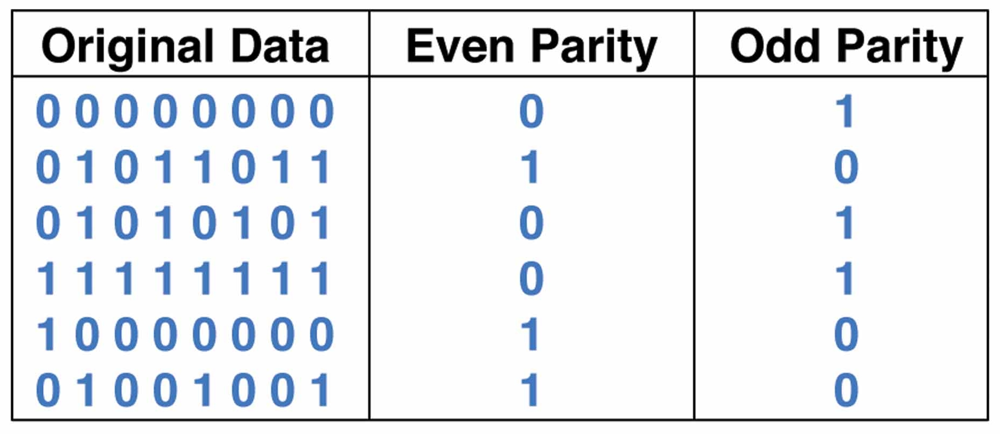
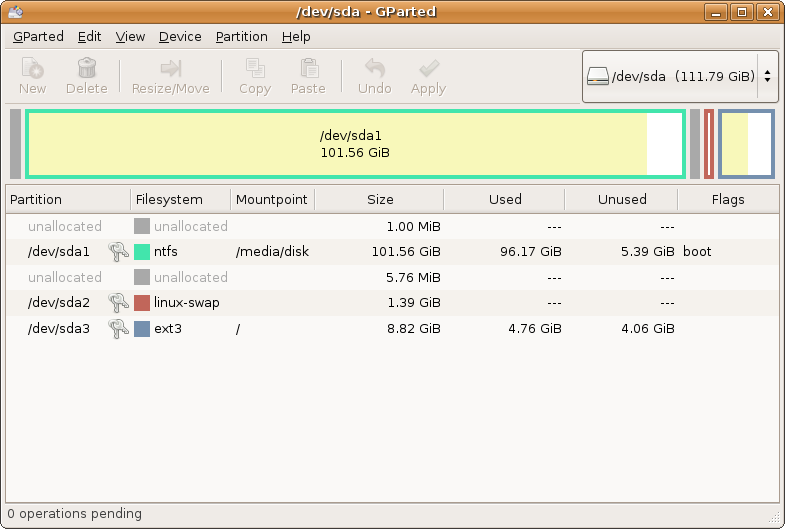
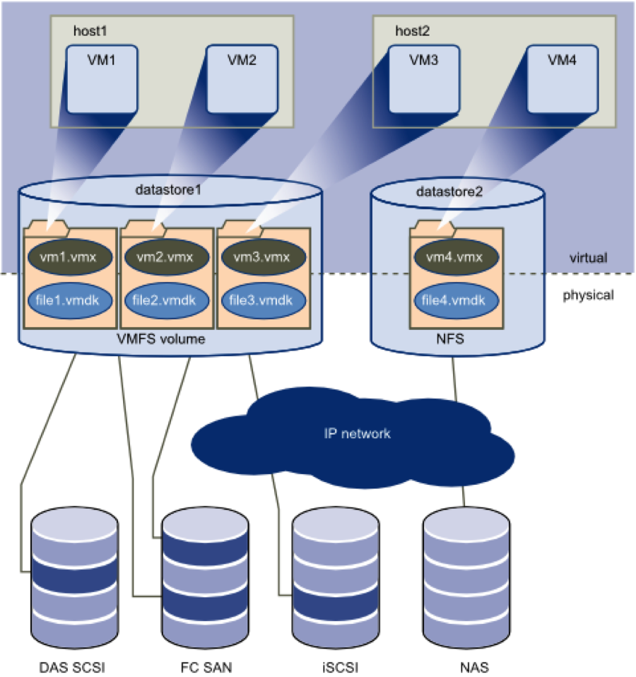

CIS 527
Lab 6 - File Servers

Image Source: Wikimedia Commons
{kind=link}

Image Source: Wikipedia

Image Source: Wikipedia

Image Source: Wikimedia Commons
{kind=link}
RAID
- Redundant Array of Independent/Inexpensive Disks
- Combine Multiple Disks For Better Performance or Data Protection
- Still Commonly Used in Some Situations

Image Source: Wikipedia
Image Source: Wikipedia

Image Source: Wikipedia
Parity
Image Source: Crystal Clear Mathematics

Image Source: Wikipedia

Image Source: Wikipedia
Partitions
Image Source: Wikipedia
Protocols
- Server Message Block (SMB) & Common Internet File System (CIFS)
- Network File System (NFS)
- File Transfer Protocol (FTP) & SSH File Transfer Protocol (SFTP)
- Internet Small Computer Systems Interface (iSCSI)
- Fibre Channel Protocol (FCP)
Storage Locations
- DAS: Direct-Attached Storage - Blocks
- NAS: Network Attached Storage - Files
- SAN: Storage Area Network - Blocks
Image Source: Wikimedia Commons
Storage Virtualization
Image Source: VirtualizationSoftware.com
Image Source: Wikimedia Commons
{kind=link}
Image Source: Wikimedia Commons